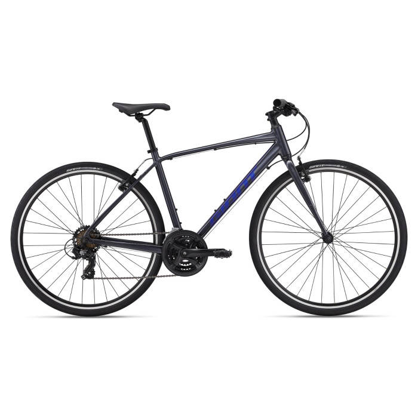
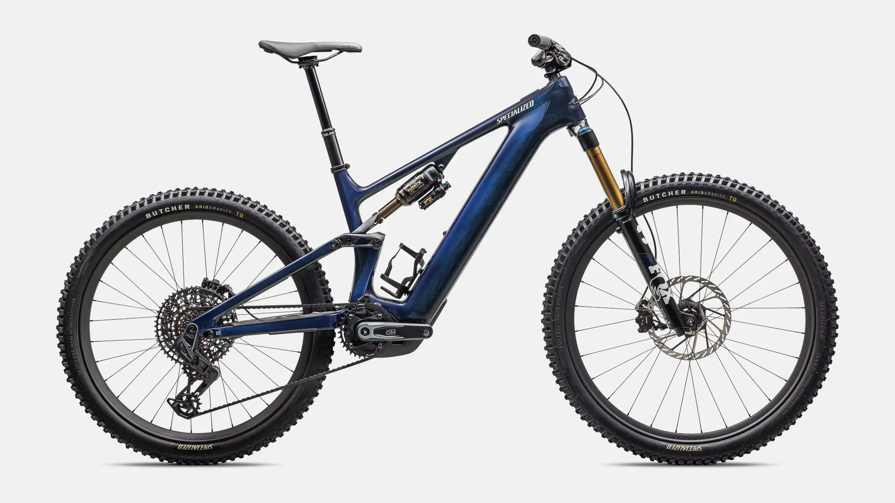
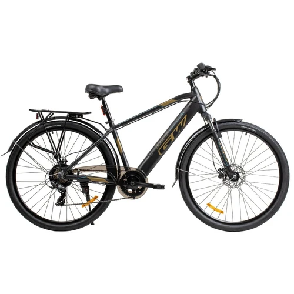

Rueda Libre

¿Quiénes somos?
En Rueda Libre alquilamos bicicletas para que recorras la ciudad y sus alrededores a tu ritmo. Somos un negocio local y nos encanta que cada cliente se sienta como en casa. Si quieres visitarnos, mira la sección Encuéntranos.
Nuestros servicios
Bicicleta urbana

Ideal para moverte por la ciudad con comodidad. Incluye casco y candado en todos los alquileres, y es muy fácil de manejar, incluso si hace tiempo no montas.
Bicicleta de montaña

El Specialized Science Club presenta la Levo 4, bicicleta de montaña eléctrica tan avanzada que te convierte en un cyborg del ciclismo. Juntos, la bici y tú, son SuperNaturales, reforzados con súper potencia, tracción, control y autonomía para conquistar cualquier terreno fuera de la carretera. Levo 4, donde lo Súper se vuelve Natural.
Bicicleta eléctrica

Para quienes quieren llegar lejos sin cansarse. Batería con autonomía de hasta 60 km, y puedes cargarla en nuestro local si la necesitas.
Recorridos guiados
Sal con un guía por rutas para todos los niveles, los sábados y domingos a las 7:00 a. m. Mira distancias, duración y precios en la tabla de recorridos guiados.
¿Cómo alquilar?
- Elige la bicicleta que más te guste.
- Presenta tu documento de identidad en el local.
- Paga el alquiler por horas o por día completo.
- Recibe tu bicicleta con casco y candado, ¡y a rodar!
Beneficios de alquilar con nosotros
- Bicicletas siempre revisadas y en buen estado.
- Precios claros, sin costos escondidos.
- Asesoría gratis para elegir tu ruta.
Una de nuestras rutas favoritas

Encuéntranos
Estamos en el centro de Medellín. Mira nuestra ubicación en el mapa o escríbenos a contacto@ruedalibre.com.